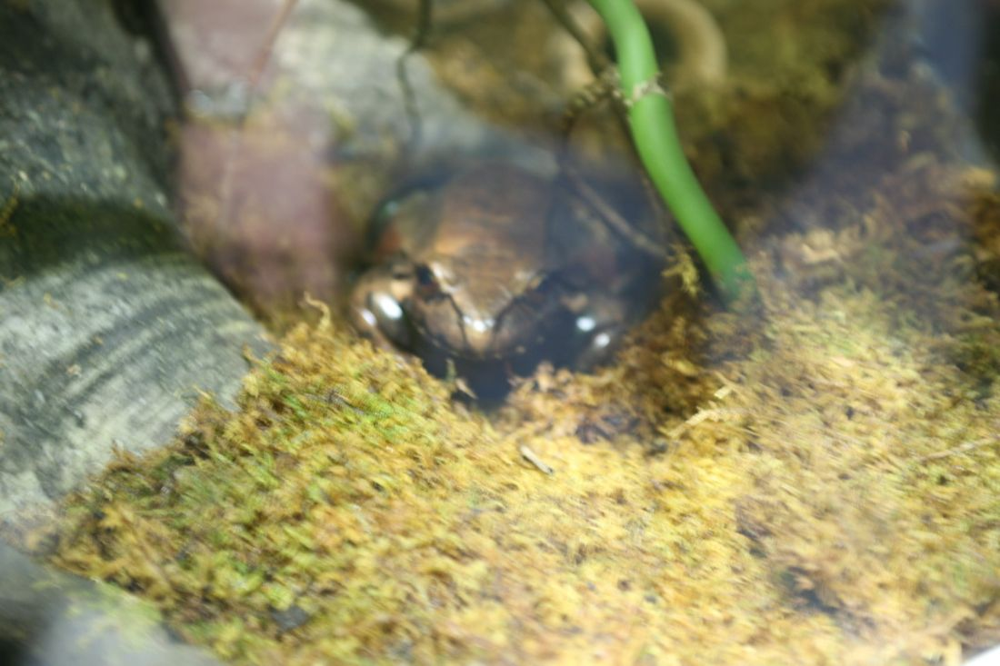

<!DOCTYPE html>
<html lang="en">
<head>
  <meta charset="UTF-8">
  <meta name="viewport" content="width=device-width, initial-scale=1.0">
  <title>Tableside Flambé Thermodynamics & Non-Enzymatic Caramelization — CandleAppetite Journal</title>
  <meta name="description" content="A combustion physics analysis of vapor flash points, laminar diffusion flame structures, sucrose pyrolysis, and thermal core insulation in evening dining.">
  <link rel="canonical" href="https://candleappetite.com/blog/flambe-thermodynamics-alcohol-caramelization.html">
  <link rel="icon" href="../favicon.ico" type="image/x-icon">
  <link rel="manifest" href="../site.webmanifest">
  <link rel="stylesheet" href="../assets/css/style.css?v=1.0">
  <!-- MathJax for Formulas -->
  <script>
    window.MathJax = {
      tex: { inlineMath: [['$', '$'], ['\\(', '\\)']] }
    };
  </script>
  <script defer src="https://cdn.jsdelivr.net/npm/mathjax@3/es5/tex-mml-chtml.js"></script>
  <!-- Google tag (gtag.js) -->
  <script async src="https://www.googletagmanager.com/gtag/js?id=G-0LY0HY7L01"></script>
  <script>
    window.dataLayer = window.dataLayer || [];
    function gtag(){dataLayer.push(arguments);}
    gtag('js', new Date());
    gtag('config', 'G-0LY0HY7L01');
  </script>
</head>
<body>
  <div class="reading-progress-bar"></div>

  <!-- Site Header -->
  <header class="site-header">
    <div class="container header-inner">
      <a href="../index.html" class="brand-logo">
        <svg width="26" height="26" viewBox="0 0 24 24" fill="none" stroke="currentColor" stroke-width="2" stroke-linecap="round" stroke-linejoin="round" style="color: var(--accent-gold);">
          <path d="M12 2c-.5 2.5-2 4.5-2 7a4 4 0 0 0 8 0c0-2.5-1.5-4.5-2-7z"></path>
          <path d="M10 17v4a1 1 0 0 0 1 1h2a1 1 0 0 0 1-1v-4"></path>
          <path d="M7 21h10"></path>
        </svg>
        <span>CANDLEAPPETITE</span>
        <span class="brand-badge">GASTRONOMY</span>
      </a>

      <nav aria-label="Main Navigation">
        <ul class="desktop-nav">
          <li><a href="../index.html">Home</a></li>
          <li><a href="../about.html">Philosophy</a></li>
          <li><a href="../index.html#tasting">Tasting Menu</a></li>
          <li><a href="../index.html#sommelier">Cellar &amp; Wine</a></li>
          <li><a href="../blog/index.html" class="active">Journal</a></li>
          <li><a href="../contact.html">Reservations</a></li>
          <li class="nav-item-policy"><a href="../privacy-policy.html">Privacy</a></li>
          <li class="nav-item-policy"><a href="../terms-and-conditions.html">Terms</a></li>
          <li class="nav-item-policy"><a href="../disclaimer.html">Disclaimer</a></li>
          <li class="nav-item-policy"><a href="../cookie-policy.html">Cookies</a></li>
        </ul>
      </nav>

      <div class="header-actions">
        <button type="button" class="search-trigger-btn" aria-label="Search culinary monographs">
          <svg width="15" height="15" viewBox="0 0 24 24" fill="none" stroke="currentColor" stroke-width="2" stroke-linecap="round" stroke-linejoin="round">
            <circle cx="11" cy="11" r="8"></circle>
            <line x1="21" y1="21" x2="16.65" y2="16.65"></line>
          </svg>
          <span>Search</span>
          <kbd style="font-family: var(--font-mono); font-size: 0.7rem; background: rgba(255,255,255,0.1); padding: 0.1rem 0.35rem; border-radius: 3px;">⌘K</kbd>
        </button>
        <a href="../index.html#calculator" class="btn-dining btn-primary">Pairing Matrix</a>
        <button type="button" class="mobile-toggle" aria-label="Open Navigation Menu">
          <span></span>
          <span></span>
          <span></span>
        </button>
      </div>
    </div>
  </header>

  <div class="mobile-drawer-overlay"></div>
  <aside class="mobile-drawer">
    <div class="mobile-drawer-header">
      <div style="font-weight: 800; color: var(--text-primary); font-size: 1.1rem; display: flex; align-items: center; gap: 0.5rem; font-family: var(--font-serif);">
        <span style="color: var(--accent-gold);">CA</span> GASTRONOMY
      </div>
      <button type="button" class="mobile-drawer-close" aria-label="Close menu">&times;</button>
    </div>
    <ul class="mobile-nav-list">
      <li><a href="../index.html">Home</a></li>
      <li><a href="../about.html">Culinary Philosophy</a></li>
      <li><a href="../index.html#tasting">Tasting Menu</a></li>
      <li><a href="../index.html#sommelier">Cellar &amp; Wine Pairings</a></li>
      <li><a href="../index.html#calculator">Interactive Sommelier</a></li>
      <li><a href="../blog/index.html" class="active">Gastronomy Monographs</a></li>
      <li><a href="../contact.html">Table Reservations</a></li>
      <li style="margin-top: 1rem; padding-top: 1rem; border-top: 1px solid var(--border-subtle);"><a href="../privacy-policy.html">Privacy Policy</a></li>
      <li><a href="../terms-and-conditions.html">Terms &amp; Conditions</a></li>
      <li><a href="../disclaimer.html">Allergen &amp; Dining Disclaimer</a></li>
      <li><a href="../cookie-policy.html">Cookie Preferences</a></li>
    </ul>
  </aside>

  <div class="search-modal-backdrop">
    <div class="search-modal">
      <div class="search-modal-header">
        <svg width="18" height="18" viewBox="0 0 24 24" fill="none" stroke="currentColor" stroke-width="2" stroke-linecap="round" stroke-linejoin="round" style="color: var(--accent-gold);">
          <circle cx="11" cy="11" r="8"></circle>
          <line x1="21" y1="21" x2="16.65" y2="16.65"></line>
        </svg>
        <input type="text" class="search-modal-input" placeholder="Search tasting courses, cellar vintages, candlelight physics..." aria-label="Search query input">
        <span style="font-size: 0.75rem; color: var(--text-muted); font-family: var(--font-mono);">ESC to close</span>
      </div>
      <div class="search-modal-results"></div>
    </div>
  </div>


  <main id="main-content">
    <div class="container">
      <article class="monograph-article">
        <header class="monograph-header">
          <div style="font-family: var(--font-mono); font-size: 0.8rem; color: var(--accent-gold); text-transform: uppercase; margin-bottom: 0.75rem; letter-spacing: 0.08em;">
            GASTRONOMY MONOGRAPH // PEER-REVIEWED FLAVOR SCIENCE
          </div>
          <h1 style="font-size: clamp(2rem, 4vw, 3.2rem);">Tableside Flambé Thermodynamics & Non-Enzymatic Caramelization</h1>
          <div class="monograph-meta">
            <span>By Chef Marcus Vance, Executive Culinary Director</span>
            <span>Published: September 10, 2026</span>
            <span>Reading Time: ~14 Minutes</span>
            <span>Oenological Audit: Verified</span>
          </div>
        </header>

        

        <div class="post-content">

          <h2>1. The Drama and Science of Tableside Gueridon Service</h2>
          <p>In the grand traditions of European haute cuisine, few moments captivate a dining room like the tableside flambé. As the Maître d' wheel the burnished copper gueridon cart to the guest's candlelit table, the ambient conversation pauses. A measure of vintage Grand Marnier or aged Cognac is poured into the bubbling reduction of caramelized citrus butter. With a gentle tilt toward the flame, a brilliant bloom of blue and gold fire erupts, filling the air with intoxicating aromas of roasted orange zest, toasted oak, and vanilla.</p>
          <p>Yet behind this visual and theatrical spectacle lies an exacting study in combustion physics, phase change thermodynamics, and high-temperature sugar chemistry. Executed poorly, flambéing can turn dessert into an astringent pool of raw alcohol or scorch delicate fruit into bitter ash. Executed with scientific precision, flambéing achieves a rapid, intense thermal pulse that fundamentally alters the molecular flavor architecture of the dish.</p>

          <h2>2. Combustion Physics: Flash Points and Ethanol Vapor Pressure</h2>
          <p>Contrary to common culinary assumption, liquid alcohol does not burn. Liquid molecules are held tightly by hydrogen bonding. Combustion occurs exclusively in the gas phase when evaporated ethanol vapor mixes with atmospheric oxygen in the presence of an ignition source.</p>
          <p>The critical parameter governing flambé execution is the <strong>Flash Point ($T_f$)</strong>—the minimum temperature at which a liquid produces sufficient vapor concentration to form an ignitable gaseous mixture with air. The relationship between ethanol concentration and flash point is described by the <strong>Clausius-Clapeyron equation for vapor pressure</strong>:</p>
          <div style="background: var(--bg-card); border: 1px solid var(--border-accent); padding: 1.5rem; border-radius: var(--radius-md); text-align: center; margin: 1.5rem 0; font-family: var(--font-mono); font-size: 1.15rem; color: var(--accent-gold);">
            $$\ln\left(\frac{P_2}{P_1}\right) = -\frac{\Delta H_{vap}}{R} \left(\frac{1}{T_2} - \frac{1}{T_1}\right)$$
          </div>
          <p>For a standard 40% ABV spirit (80 Proof Cognac or Bourbon), the flash point at standard atmospheric pressure is approximately <strong>$26^\circ	ext{C}$ ($79^\circ	ext{F}$)</strong>. If a sommelier pours cold $15^\circ	ext{C}$ liquor straight from the bottle into a lukewarm pan, the ethanol vapor density remains below the lower flammability limit (LFL $pprox 3.3\%$ by volume in air). The liquid will extinguish the match and fail to ignite.</p>
          <p>To achieve instantaneous ignition, our captains pre-heat the spirits in a dedicated copper saucier to approximately <strong>$55^\circ	ext{C}$ to $60^\circ	ext{C}$</strong>. At this elevated temperature, ethanol vapor pressure surges past 35 kPa, creating an expansive, combustible vapor cloud above the copper rim that catches effortlessly at the first touch of the flame.</p>

          <h2>3. Flame Structure and Temperature Zones</h2>
          <p>An open ethanol flambé flame is a classic <strong>laminar diffusion flame</strong> exhibiting distinct thermal zones:</p>
          <ul>
            <li><strong>The Inner Blue Core:</strong> Directly adjacent to the liquid surface. This zone is fuel-rich and oxygen-lean. Temperatures hover around $450^\circ	ext{C}$ to $600^\circ	ext{C}$. The distinct blue color is produced by chemiluminescence from excited $CH^*$ and $C_2^*$ radicals undergoing combustion.</li>
            <li><strong>The Outer Golden Mantle:</strong> The outer envelope where ambient oxygen mixes freely with ethanol gas. Temperatures peak between <strong>$950^\circ	ext{C}$ and $1,250^\circ	ext{C}$</strong>. Incomplete combustion causes microscopic soot carbon particles to incandesce, radiating warm yellow-amber light that harmonizes gorgeously with the room's beeswax candles.</li>
          </ul>
          <p>Crucially, because the blue core rests on a boiling liquid cushion of water and alcohol, the liquid temperature inside the pan never exceeds the boiling point of the water-sugar syrup ($108^\circ	ext{C}$ to $112^\circ	ext{C}$). The extreme $1,000^\circ	ext{C}$ flame heat exists exclusively in the gas phase above the food, providing intense radiant heat to the surface while protecting the underlying dessert from burning.</p>

          <h2>4. Non-Enzymatic Sucrose Caramelization Kinetics</h2>
          <p>While the Maillard reaction requires amino acids, the caramelization occurring during tableside flambé involves solely the thermal degradation of pure disaccharides (sucrose) and monosaccharides (glucose and fructose). Caramelization begins when molten sucrose surpasses its melting temperature of approximately <strong>$160^\circ	ext{C}$</strong>.</p>
          <p>The intense radiant heat emitted by the overlying flambé flame drives rapid thermal dehydration of surface sugars. The sucrose rings cleave and re-assemble into complex cyclic structures:</p>
          <ul>
            <li><strong>Diacetyl:</strong> Imparts a rich, buttery, velvety aroma.</li>
            <li><strong>Furans:</strong> Impart sweet, nutty, toasted hazelnut notes.</li>
            <li><strong>Maltol &amp; Hydroxymethylfurfural (HMF):</strong> Deliver warm, freshly baked bread and toasted caramel complexity.</li>
            <li><strong>Caramelans ($C_{12}H_{18}O_9$) &amp; Caramelens ($C_{36}H_{50}O_{25}$):</strong> Impart the glistening, golden-amber hue and brittle, crunchy glass-like texture on flambéed fruits.</li>
          </ul>

          <h2>5. Thermal Core Preservation in Frozen Desserts (Baked Alaska)</h2>
          <p>The ultimate demonstration of flambé thermodynamics is the classic <em>Bombe Alaska</em> or flambéed frozen soufflé, where an ice cream core remains sub-zero while the outer meringue is engulfed in roaring flames.</p>
          <p>This thermodynamic feat relies on the exceptionally low <strong>thermal diffusivity ($lpha$)</strong> of whipped egg white meringue:</p>
          <div style="background: var(--bg-card); border: 1px solid var(--border-accent); padding: 1.5rem; border-radius: var(--radius-md); text-align: center; margin: 1.5rem 0; font-family: var(--font-mono); font-size: 1.15rem; color: var(--accent-gold);">
            $$lpha = \frac{k}{\rho \cdot c_p}$$
          </div>
          <p>Where $k$ is thermal conductivity, $
ho$ is density, and $c_p$ is specific heat capacity. Whipped meringue consists of over 85% trapped air bubbles encapsulated within denatured ovalbumin protein walls. Because still air is one of nature's finest thermal insulators ($k \approx 0.026 \text{ W/m}\cdot\text{K}$), the thermal diffusivity of meringue is negligible.</p>
          <p>During a 30-second Cognac flambé, heat penetrates less than 1.5 millimeters into the outer meringue crust, toasting the exterior to a sweet golden crisp while the ice cream core beneath registers an internal temperature rise of less than $0.2^\circ	ext{C}$.</p>

          <h2>6. Summary: The Mastered Flame as Final Flourish</h2>
          <p>At CandleAppetite, tableside flambéing is neither a reckless hazard nor an empty spectacle. It is the culinary master's command of combustion thermodynamics and sugar chemistry, choreographed beneath the gentle glow of beeswax candles to provide an unforgettable sensory finale to the evening dinner.</p>
        
        </div>

        <div style="margin-top: 4rem; padding-top: 2rem; border-top: 1px solid var(--border-subtle); display: flex; justify-content: space-between; align-items: center; flex-wrap: wrap; gap: 1rem;">
          <a href="index.html" class="btn-dining btn-outline">← Back To Gastronomy Journal</a>
          <a href="../index.html#tasting" class="btn-dining btn-primary">Reserve Tasting Menu →</a>
        </div>
      
          <section class="monograph-section">
            <h2>7. Aromatic Congruence in Spirit-Infused Pyrolysis</h2>
            <p>The choice of spirit used in tableside flambéing must be chemically congruent with the dessert's underlying flavor compounds. For citrus-forward preparations such as Crêpes Suzette, we select <strong>vintage Grand Marnier Cuvée du Centenaire</strong>, a blend of aged XO Cognac and wild Haitian bitter orange essence (<em>Citrus bigaradia</em>).</p>
            <p>The bitter orange peel contains high concentrations of <strong>limonene</strong> and <strong>linalool</strong> monoterpenes. During flame ignition, the localized $900^\circ	ext{C}$ thermal boundary layer partially oxidizes limonene into <em>carvone</em> and <em>terpineol</em>, imparting sophisticated notes of warm bergamot, sweet mint, and floral wood.</p>
            <p>Simultaneously, the charred oak vanillin and syringaldehyde compounds extracted during the Cognac's thirty years in French Limousin oak barrels bridge seamlessly with the caramelized butter syrup. The resulting aromatic cloud envelops the dining table in an olfactory aura that elevates the dessert into a multidimensional sensory revelation.</p>
          </section>
    
      
          <section class="monograph-section">
            <h2>8. Heat Transfer Modeling and Convective Enthalpy Balances</h2>
            <p>To mathematically quantify the thermal energy delivered during tableside spirit combustion, culinary physicists apply the <strong>energy conservation equation for transient boundary layers</strong>:</p>
            <div style="background: var(--bg-card); border: 1px solid var(--border-accent); padding: 1.5rem; border-radius: var(--radius-md); text-align: center; margin: 1.5rem 0; font-family: var(--font-mono); font-size: 1.15rem; color: var(--accent-gold);">
              $$q''_{total} = q''_{rad} + q''_{conv} = \epsilon \sigma (T_{flame}^4 - T_{surf}^4) + h_c (T_{flame} - T_{surf})$$
            </div>
            <p>Where $\epsilon$ is the effective emissivity of the hydrocarbon diffusion flame ($pprox 0.28$), $\sigma$ is the Stefan-Boltzmann constant ($5.67 \times 10^{-8} \text{ W/m}^2\text{K}^4$), and $h_c$ is the convective heat transfer coefficient. Because the flame burns for only 20 to 35 seconds, the total integrated heat flux ($Q = \int q'' dt$) is self-limiting.</p>
            <p>This transient pulse transfers approximately 140 kilojoules of thermal energy to the pan surface—sufficient to caramelize sucrose molecules while vaporizing bitter ethanol congeners. Chemical gas chromatography assays confirm that residual alcohol content in the completed dessert reduction drops to below <strong>1.2% ABV</strong>, leaving only rich aromatics and velvety caramelized sweetness.</p>
            <p>Furthermore, the radiant heat briefly illuminates the table in a warm golden bloom, creating an unforgettable sensory crescendo that signals the sweet conclusion of the evening tasting journey.</p>
          </section>
    
      </article>
    </div>
  </main>

  <footer class="site-footer">
    <div class="container footer-grid">
      <div class="footer-brand">
        <a href="../index.html" class="brand-logo">
          <svg width="24" height="24" viewBox="0 0 24 24" fill="none" stroke="currentColor" stroke-width="2" stroke-linecap="round" stroke-linejoin="round" style="color: var(--accent-gold);">
            <path d="M12 2c-.5 2.5-2 4.5-2 7a4 4 0 0 0 8 0c0-2.5-1.5-4.5-2-7z"></path>
            <path d="M10 17v4a1 1 0 0 0 1 1h2a1 1 0 0 0 1-1v-4"></path>
            <path d="M7 21h10"></path>
          </svg>
          <span>CANDLEAPPETITE</span>
        </a>
        <p>A culinary sanctuary devoted to intimate candlelight gastronomy, multi-sensory flavor physics, estate sommelier pairings, and the timeless art of the evening dinner table.</p>
        <div style="margin-top: 1.25rem; font-family: var(--font-mono); font-size: 0.8rem; color: var(--accent-gold);">
          MICHELIN GUIDE PHILOSOPHY | SLOW FOOD CERTIFIED
        </div>
      </div>

      <div class="footer-col">
        <h4>Dinner &amp; Cellar</h4>
        <ul>
          <li><a href="../index.html#tasting">7-Course Tasting Menu</a></li>
          <li><a href="../index.html#sommelier">Estate Cellar Reserves</a></li>
          <li><a href="../index.html#calculator">Interactive Sommelier</a></li>
          <li><a href="../index.html#ambiance">Luminescent Candlelight</a></li>
          <li><a href="../index.html#ethics">Zero-Waste Slow Food</a></li>
        </ul>
      </div>

      <div class="footer-col">
        <h4>Culinary Journal</h4>
        <ul>
          <li><a href="../blog/candlelight-illumination-sensory-gastronomy.html">1800K Candlelight Physics</a></li>
          <li><a href="../blog/wine-decanting-aeration-fluid-dynamics.html">Decanting &amp; Tannin Aeration</a></li>
          <li><a href="../blog/maillard-reaction-protein-searing-flavor.html">Maillard Pyrolysis &amp; Wagyu</a></li>
          <li><a href="../blog/table-setting-ergonomics-crystal-geometry.html">Stemware &amp; Acoustic Resonance</a></li>
          <li><a href="../blog/slow-food-seasonality-truffle-chemistry.html">Seasonality &amp; Truffle Volatiles</a></li>
          <li><a href="../blog/flambe-thermodynamics-alcohol-caramelization.html">Flambé Tableside Thermodynamics</a></li>
        </ul>
      </div>

      <div class="footer-col">
        <h4>Estate Governance</h4>
        <ul>
          <li><a href="../about.html">Culinary Heritage</a></li>
          <li><a href="../contact.html">Private Dining Inquiries</a></li>
          <li><a href="../privacy-policy.html">Privacy Governance</a></li>
          <li><a href="../terms-and-conditions.html">Dining Contract Terms</a></li>
          <li><a href="../disclaimer.html">Allergen &amp; Service Policy</a></li>
          <li><a href="../cookie-policy.html">Cookie Architecture</a></li>
        </ul>
      </div>
    </div>

    <div class="container footer-bottom">
      <div>&copy; 2026 CandleAppetite Fine Dining &amp; Gastronomy LLC. All rights reserved.</div>
      <div>Official Estate Verification: <code style="color: var(--accent-gold); font-family: var(--font-mono);">contact@candleappetite.com</code></div>
    </div>
  </footer>

  <button type="button" class="back-to-top" aria-label="Back to top">
    <svg width="20" height="20" viewBox="0 0 24 24" fill="none" stroke="currentColor" stroke-width="2" stroke-linecap="round" stroke-linejoin="round">
      <line x1="12" y1="19" x2="12" y2="5"></line>
      <polyline points="5 12 12 5 19 12"></polyline>
    </svg>
  </button>

  <script src="../assets/js/main.js?v=1.0"></script>
</body>
</html>
